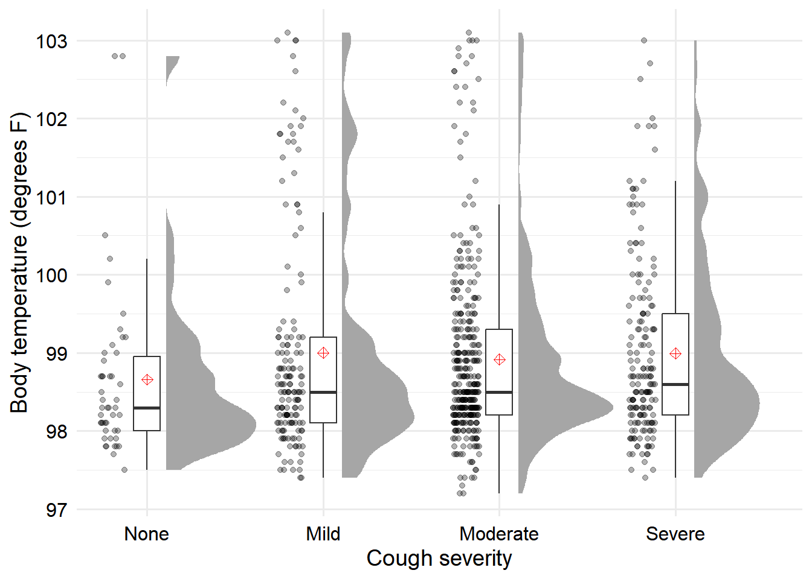

dat <- readr::read_rds(here::here("fluanalysis", "data", "clean-data.Rds"))
dat_eda <-
dat |>
dplyr::select(
#Outcomes
BodyTemp, Nausea,
# Predictors
Cough, CoughYN2, ChillsSweats, SubjectiveFever
)Flu analysis EDA
The main outcomes we will consider for this analysis are body temperature (continuous) and nausea (categorical). Since there are 30 other potential predictors, we need to decide which predictors to explore. Instead of doing any sort of data-driven method for this, I will just pick some:
- cough (ordered);
- cough (prescence/absence);
- chills or sweats (presence/absence); and
- subjective fever (presence/absence).
There is no real reason why I chose these ones, but I think comparing subjective fever to body temperature will be interesting. (We actually did this as an exploratory analysis for a paper we recently submitted on these data, and it was interesting how subjective fever didn’t necessarily seem to line up with body temperature.)
Univariate distributions
First we will look at the distribution of the only continuous variable, body temperature.
# Define a few functions so that making the summary stats I want will be easier
# The first function returns the quantiles as a tibble
get_quantiles <- function(.x, p = c(0, 0.25, 0.5, 0.75, 1)) {
q <- quantile(.x, probs = p)
out <-
tibble::tibble(x = q, probs = p * 100) |>
tidyr::pivot_wider(names_from = probs, values_from = x,
names_glue = "p{probs}")
return(out)
}
# The second function returns the mean and bootstrap CI (b = 1000, alpha = .05)
# as a tibble
get_boot_ci <- function(.x, d = 2) {
out <-
ggplot2::mean_cl_boot(.x) |>
dplyr::transmute(
mean = round(y, d),
"95% CI" = paste0("(", round(ymin, d), ",", round(ymax, d), ")")
)
return(out)
}
# Now generate the summary stats and print as an HTML table
dat_eda |>
dplyr::summarize(
get_boot_ci(BodyTemp),
"std. dev" = round(sd(BodyTemp), 2),
"std. err" = round(sd(BodyTemp) / sqrt(dplyr::n()), 2),
get_quantiles(BodyTemp)
) |>
knitr::kable()| mean | 95% CI | std. dev | std. err | p0 | p25 | p50 | p75 | p100 |
|---|---|---|---|---|---|---|---|---|
| 98.94 | (98.85,99.02) | 1.2 | 0.04 | 97.2 | 98.2 | 98.5 | 99.3 | 103.1 |
From the summary statistics, we can see that while the median is fairly close to the mean (within one standard deviation), the third quartile (75th percentile) and the maximum both lie outside of the 95% (bootstrap) confidence interval. This suggests that while the bulk of the data are close together, there are some data points which are much larger than the majority. These could be outliers, or the data could be skewed to the right. We could calculate more summary statistics to try and figure this out, but I think we will have more luck making a plot.
First I’ll set the ggplot2 theme for all subsequent plots.
ggplot2::theme_set(
zlib::theme_ms() +
# Something I need to fix in zlib -- the strip text bottoms get cut off
ggplot2::theme(
strip.text = ggplot2::element_text(margin = ggplot2::margin(b = 2))
)
)Now we’ll make a histogram of body temperature observations.
ggplot(dat_eda, aes(x = BodyTemp)) +
geom_histogram(
binwidth = 0.1,
color = "black",
fill = "gray",
boundary = 0.5
) +
scale_y_continuous(expand = expansion(add = c(0, 1))) +
scale_x_continuous(name = "body temperature (degrees F)")From the histogram, we can see that the data are mostly concentrated around the range given by the CI in the previous table. However, there are a few outliers which are above this, so the data is skewed, but there are not enough large temperature values to dramatically skew the mean of the data. We could consider transforming the data to correct for the skew (e.g. the Box-Cox transformation may help), but this makes the interpretation more annoying so I will not do that.
Next let’s look at the distribution of the binary variables.
dat_eda |>
dplyr::select(-BodyTemp, -Cough) |>
tidyr::pivot_longer(
cols = everything()
) |>
ggplot(aes(x = value)) +
geom_hline(yintercept = nrow(dat_eda) / 2, lty = 2) +
geom_bar(color = "black", fill = "gray") +
facet_wrap(vars(name)) +
scale_x_discrete(name = NULL) +
scale_y_continuous(
expand = expansion(mult = c(0, 0.01))
)We can also create this information in table form. For the table I would prefer to have the percentages instead of the counts, but I was too lazy to do this in the plot above.
dat_eda |>
dplyr::select(-BodyTemp, -Cough) |>
tidyr::pivot_longer(cols = everything(), names_to = "var") |>
dplyr::group_by(var) |>
dplyr::summarize(
"# positive" = sum(value == "Yes"),
p = round(mean(value == "Yes"), 2),
"95% CI" = paste0(
"(", round(p - 1.96 * sqrt((p * (1-p)) / 730), 2), ",",
round(p + 1.96 * sqrt((p * (1-p)) / 730), 2), ")")
) |>
knitr::kable()| var | # positive | p | 95% CI |
|---|---|---|---|
| ChillsSweats | 600 | 0.82 | (0.79,0.85) |
| CoughYN2 | 683 | 0.94 | (0.92,0.96) |
| Nausea | 255 | 0.35 | (0.32,0.38) |
| SubjectiveFever | 500 | 0.68 | (0.65,0.71) |
We can see that the majority of respondents reported chills and sweats and cough. A bit less than half reported nausea and a bit more than half reported a subjective fever.
Finally let’s make a plot showing the distribution of our ordered outcome that I picked, the cough severity. Here I’ll put the labels on the plot just the class has an example they can follow for this.
dat_eda |>
dplyr::count(Cough) |>
dplyr::mutate(
perc = n / sum(n),
perc_lab = paste0(sprintf("%.1f", perc * 100), "%"),
text_lab = paste0(n, " (", perc_lab, ")")
) |>
ggplot() +
ggplot2::aes(x = Cough, y = n) +
geom_col(color = "black", fill = "gray") +
geom_text(aes(label = text_lab), size = 6, nudge_y = 15) +
labs(
x = "Cough severity",
y = "Count"
)I think the most important conclusion from this plot is that almost half of the respondents marked “Moderate”, and very few of them marked “None”. Using the “None” category for prediction will likely be difficult unless that category is strongly associated with a specific outcome.
Bivariate associations
Now we can examine the relationships between our predictors and our outcomes. First we will consider body temperature as the main outcome.
Since we have a continuous outcome and categorical predictors, let’s do one of those fancy raincloud plots that people online seem to love these days. Code shamelessly copied from this great tutorial, I was even feeling too lazy to mess with it more like I’m usually inclined to do.
dat_eda |>
tidyr::pivot_longer(
cols = -c(BodyTemp, Cough)
) |>
ggplot(aes(x = value, y = BodyTemp)) +
ggdist::stat_halfeye(
adjust = .5,
width = .6,
.width = 0,
justification = -.2,
point_colour = NA
) +
geom_boxplot(
width = .15,
outlier.shape = NA
) +
## add justified jitter from the {gghalves} package
gghalves::geom_half_point(
## draw jitter on the left
side = "l",
## control range of jitter
range_scale = .4,
## add some transparency
alpha = .3
) +
stat_summary(
geom = "point",
fun = mean,
shape = 9,
color = "red",
size = 2
) +
facet_wrap(~name)I could probably spend some more time fiddling with this plot to make it look nicer but I am not going to, I think it is about 80% to where I want it to be. Anyways, this plot shows the data points, the boxplot, the violin plot density estimate, and the diamond crosshair marks the mean.
There does not appear to be a strong relationship between symptoms and any of the body temps, which is possibly distorted by the fact that high body temperatures are rarer in our sample. There is maybe a slight association with ChillsSweats, CoughYN2, and SubjectiveFever, but probably no relationship with nausea.
And then we’ll do it separately for the ordinal outcome just because my life is easier this way (you can’t pivot an unordered and ordered factor into the same column!).
dat_eda |>
ggplot2::ggplot() +
aes(x = Cough, y = BodyTemp) +
ggdist::stat_halfeye(
adjust = .5,
width = .6,
.width = 0,
justification = -.2,
point_colour = NA
) +
geom_boxplot(
width = .15,
outlier.shape = NA
) +
## add justified jitter from the {gghalves} package
gghalves::geom_half_point(
## draw jitter on the left
side = "l",
## control range of jitter
range_scale = .4,
## add some transparency
alpha = .3,
transformation = position_jitter(height = 0)
) +
stat_summary(
geom = "point",
fun = mean,
shape = 9,
color = "red",
size = 2
) +
coord_cartesian(xlim = c(1.2, NA), clip = "off") +
labs(
x = "Cough severity",
y = "Body temperature (degrees F)"
)
It looks like people who reported no cough were more likely to have a low body temperature, but there are a few outliers (note that high temperature plus no cough is an important diagnostic criterion for strep throat, which was likely a common competing risk for influenza in the source study).
Now we can visualize the relationship between the different variables and the presence of absence of nausea. For this, I will make a separate plot for the categorical predictors and the numerical predictor. First let’s look at the relationship between nausea and body temperature.
Here’s kind of a cool way to visualized what a univariate logistic regression would look like. If you want to see another example, you can see where I copied the code from (tweaking required a bit this time) here. For this plot, presence of nausea is represented by “1” and absence of nausea is represented by “0”. The size of the circle represents the weight of that point (the number of patients which had the same body temperature and nausea status). This allows us to fit a GLM that predicts the probability a patient has nausea based on their body temperature. As you can see from the plot, body temperature has very little predictive power for nausea status.
dat_eda |>
dplyr::transmute(
BodyTemp,
Nausea = ifelse(Nausea == "Yes", 1, 0)
) |>
ggplot(aes(x = BodyTemp, y = Nausea)) +
ggdist::stat_dots(
aes(y = Nausea, side = ifelse(Nausea == 0, "top", "bottom")),
scale = 1/3
) +
geom_smooth(
formula = "y ~ x", method = "glm",
method.args = list(family = "binomial")
) +
scale_x_continuous(name = "body temperature (degrees F)") +
scale_y_continuous(name = "probability of nausea")The logistic regression line is pretty flat, and it’s hard to compare the distribution of points, so let’s also make overlapping histograms.
dat_eda |>
ggplot(aes(x = BodyTemp, fill = Nausea)) +
geom_histogram(
aes(y = after_stat(density)),
boundary = 0.1,
binwidth = 0.1,
position = position_identity(),
alpha = 0.67,
color = "black"
) +
# These two colors make a colorblind friendly palette
scale_fill_manual(values = c("#E69F00", "#56B4E9")) +
scale_x_continuous(name = "body temperature (degrees F)")If you think this is two confusing, since BodyTemp is mostly continuous you could also do a density curve, which works well for “densely-measured” data. So sometimes it will look really bad, and then you should use a histogram instead. But for this it will be ok, and easier to look at.
dat_eda |>
ggplot(aes(x = BodyTemp, color = Nausea, fill = Nausea)) +
geom_density(
kernel = "epanechnikov",
position = position_identity(),
alpha = 0.5,
linewidth = 2
) +
# These two colors make a colorblind friendly palette
scale_color_manual(values = c("#E69F00", "#56B4E9")) +
scale_fill_manual(values = c("#E69F00", "#56B4E9")) +
scale_x_continuous(name = "body temperature (degrees F)")No matter which of these three plots you prefer, we can see generally the same thing: there is not a clear pattern in the relationship between body temperature and having nausea.
Now we can see which of the categorical variables are predictive for nausea status. The only real visualization option we have here is a bar chart, but we can choose if we want it to be stacked or clustered.
dat_eda |>
dplyr::select(-BodyTemp, -Cough) |>
tidyr::pivot_longer(cols = -Nausea) |>
ggplot(aes(x = value, fill = Nausea)) +
geom_bar(position = "fill") +
facet_wrap(vars(name)) +
scale_x_discrete(name = NULL) +
scale_y_continuous(labels = scales::percent_format(), name = NULL) +
# These colors are also colorblind freindly, but not as good as the previous
# ones. Go Cats!!
scale_fill_manual(values = c("#592C88", "#C1A875")) +
theme(legend.position = "bottom", legend.justification = "center")Let’s try the clustered option for our ordinal Cough severity variable.
dat_eda |>
dplyr::select(Nausea, Cough) |>
ggplot(aes(x = Cough, fill = Nausea)) +
geom_bar(position = "dodge") +
scale_x_discrete(name = "Cough severity") +
scale_y_continuous(name = "Count") +
scale_fill_manual(values = c("#592C88", "#C1A875"))
Note that you can do things that are a bit fancier, like this option of computing sample proportions with CIs. I typically prefer the simpler plots for exploration though, I just wanted to include as many examples as I could think of in here.
dat_eda |>
dplyr::select(Nausea, Cough) |>
# Turn Nausea into 0/1 indicator for math stuff
dplyr::mutate(Nausea = as.numeric(Nausea == "Yes")) |>
dplyr::group_by(Cough) |>
dplyr::reframe(ggplot2::mean_cl_boot(Nausea)) |>
ggplot(aes(x = Cough, y = y, ymin = ymin, ymax = ymax)) +
geom_line(aes(group = 1)) +
geom_pointrange() +
scale_y_continuous(
limits = c(0.2, 0.6),
breaks = seq(0, 1, 0.1),
name = "Proportion with nausea (95% bootstrap CI)",
labels = scales::label_percent()
) +
scale_x_discrete(name = "Cough severity")You could do something even more complicated and do two lines in different colors that show the counts. But I won’t do that because I think you probably shouldn’t do that. I think this last one is already quite complicated and in general you want your audience to not have to think about your charts, or at least exert as little mental effort as necessary. However, from this plot of the proportions, we can see that there appears to be no trend in the proportion of people in our sample with nausea as cough severity increases.
Based on our charts, there aren’t any extremely strong predictors of nausea from the set of predictors that I chose, but it looks like cough is not really predictive at all. Out of these, maybe myalgia and weakness are the strongest predictors, but even those are only moderately predictive. However, it may be the case that these symptoms actually interact, so these bivariate associations may not capture all available information.
OK, that’s about all for this script. Now we can move on to actual modeling.